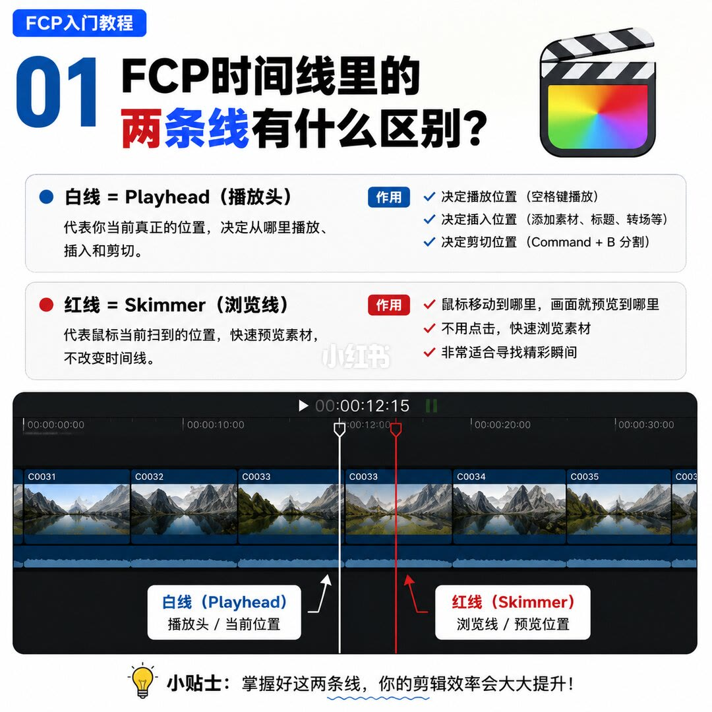
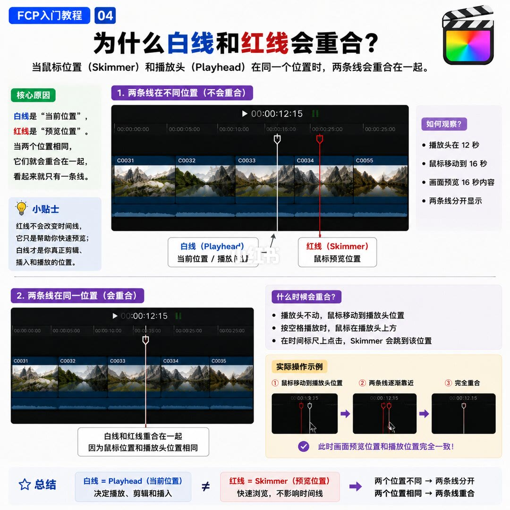
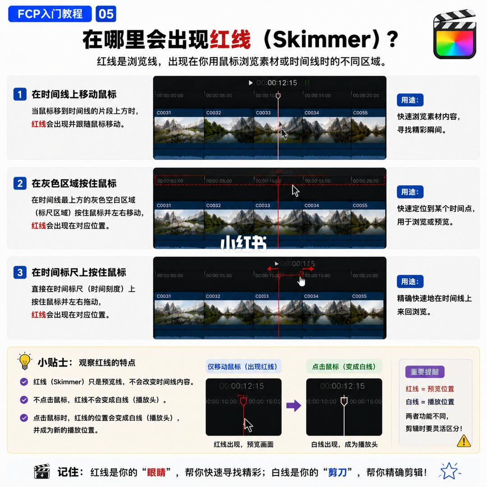

图文实录 · 小红书 · 敖舜
FCP｜白线与红线，搞懂时间线剪辑逻辑
白线是 Playhead，决定从哪里播放、插入和剪切。红线是 Skimmer，鼠标扫到哪，画面就预览到哪，时间线本身不动。两条线重合，只因为鼠标和播放头停在同一帧。
1/7
两条线各管一件事
角标「FCP入门教程 01」，问的是时间线里的两条线有什么区别。白线等于 Playhead（播放头）：代表当前真正的位置，决定从哪里播放、插入和剪切。作用三条：空格键从这里播放；在这里添加素材、标题、转场；Command + B 在这里分割。红线等于 Skimmer（浏览线）：代表鼠标当前扫到的位置，用来快速预览，不改变时间线。作用也是三条：鼠标到哪画面预览到哪；不用点击就能浏览；适合找精彩瞬间。截图时间码停在 00:00:12:15，白线标注「播放头 / 当前位置」，红线在它右侧，标注「浏览线 / 预览位置」。页底说掌握这两条线，剪辑效率会提升。

2/7
白线是剪切和插入的参考线
角标 02。白线是时间线上的当前位置。播放从它所在的位置开始；素材、标题、转场加在它上面；分割也在它上面，快捷键 Command + B。常用操作四条：空格播放或暂停；Command + B 在白线处分割；I / O 设置入点和出点；左右方向键逐帧移动白线。例子分三步：把白线移到 00:12:15，按 Command + B，白线所在处就是剪切点。示意图上的时间码写成 00:00:12:15。标注框写：当前播放位置，也是剪切、插入位置。页底要求先把白线放到精确位置再操作。
3/7
红线只预览，扫到播放头才会叠上
角标 03。红线代表鼠标当前位置，不是播放位置。鼠标一动，画面就预览红线那一帧。作用：不用点击或播放就能看每一帧；找光影、表情、动作；配合 I / O 选取片段。截图里白线标注「播放头 / 当前编辑位置，真正的剪辑和播放位置」，红线标注「鼠标扫到的位置 / 预览位置」。黄条写明：红线只是预览位置，不会改变时间线，也不会影响剪辑内容。
重合的原因写在本页下半：鼠标（Skimmer）移到播放头（Playhead）所在位置，两条线叠成一条。分开时鼠标不在播放头上。红线出现的三种情况：在时间线片段上移动鼠标；在灰色空白区域移动鼠标；在时间标尺上按住鼠标拖动。快捷键：S 打开或关闭浏览线；Shift + S 这一行写成「关开 / 关闭音频 Skimming」，括注是是否同时试听；按住 Control，鼠标移动时不显示红线。页底鼓励养成用 Skimmer 找素材的习惯。
4/7
位置不同就分开，位置相同就重合
角标 04，专讲为什么会重合：鼠标位置（Skimmer）和播放头（Playhead）在同一位置。核心原因：白线是「当前位置」，红线是「预览位置」。小贴士重复：红线不改时间线，白线才是剪辑、插入和播放的位置。
不同位置的观察例子：播放头在 12 秒，鼠标移到 16 秒，画面预览 16 秒，两条线分开。同一位置会重合。三种时机：播放头不动、鼠标移到播放头；按空格播放时鼠标停在播放头上方；在时间标尺上点击，Skimmer 跳到该位置。操作示意三步：鼠标移向播放头，两条线靠近，完全重合。此时预览位置和播放位置一致。页底用不等号分开两边：白线决定播放、剪辑和插入；红线快速浏览，不影响时间线。位置不同则分开，相同则重合。

5/7
红线出现在三处，要点击才变成白线
角标 05，问红线出现在哪里。总述：浏览素材或时间线的不同区域时会出现。
一、在时间线片段上移动鼠标，红线跟随，用来浏览、找精彩瞬间。二、在时间线最上方灰色空白（标尺区域）按住鼠标左右移动，红线出现在对应位置，用来定位某个时间点。三、直接在时间刻度上按住并左右拖动，用来来回浏览。
小贴士三条：红线只是预览线，不改变时间线内容；不点击，红线不会变成白线；点击时，红线的位置变成白线，并成为新的播放位置。左图「仅移动鼠标」是红线预览，右图「点击鼠标」是白线播放头。旁边提醒：红线等于预览位置，白线等于播放位置。页底口诀：红线是眼睛，白线是剪刀。

6/7
这张图的角标写着 07
文件顺序是第 6 张，画面角标却是「FCP入门教程 07」。标题：白线决定，红线寻找。副题是搞懂 Playhead 和 Skimmer。
角色：白线代表真正的位置，决定播放、剪辑、插入，称为剪刀位置，负责决定。红线代表鼠标扫到的位置，只用于预览，不改变时间线，用来找精彩瞬间，负责寻找。示意图时间码仍是 00:00:12:15。白线注「播放头 / 当前活动位置，确定在这里播放、剪辑、插入」；红线注「鼠标当前位置 / 预览位置，快速浏览，寻找精彩画面」。
应用三步：红线扫过素材，不用播放就能找瞬间；找到位置后按 I / O 选取片段；白线确定分割、插入、组合的位置。快捷键：S 开关浏览线；Shift + S 写成「打开 / 关闭音频 Skimming」；按住 Control 临时关闭；空格播放或暂停；I / O 设入出点；Command + B 在白线位置分割。总结三句：白线是剪刀，红线是眼睛，Skimmer 加上入出点会更快。天平两边是「红线寻找」和「白线决定」。页底：魅力不在更多特效，而在更快找到故事、更高效讲故事。
7/7
和第 6 页是同一张图
第 7 张与第 6 张像素相同，角标同样是 07，文字也是「白线决定，红线寻找」。下载结果里没有单独标成 06 的一页。下面仍按原文件顺序放上这张重复图。

收尾
结论。播放、插入、Command + B 分割都落在白线；红线只跟着鼠标预览。要改播放位置，按第 5 页的说法要点击，红线才会变成白线。
支撑页。定义和三项作用在 1/7。白线的四条操作和分割例子在 2/7。红线不改时间线、三种出现方式和快捷键在 3/7。12 秒对 16 秒的分开，以及三种重合时机，在 4/7。三个区域和「点击才变白线」在 5/7。寻找、标记、再在白线执行的顺序，以及眼睛和剪刀的说法，在角标为 07 的 6/7。
边界。6/7 与 7/7 是同一张图，角标是 07，没有标号 06 的内容。第 3 页灰色区域写「移动鼠标」，第 5 页写「按住鼠标」。第 3 页 Shift + S 写成「关开 / 关闭」，第 6 页写成「打开 / 关闭」。I / O 被放在红线找到画面之后，笔记没有写明入点落在红线还是白线；分割则写明在白线。笔记简介后半截提到剪映，七张图里没有这一段。时间码和快捷键都是画面上的说法，不是实测录屏。